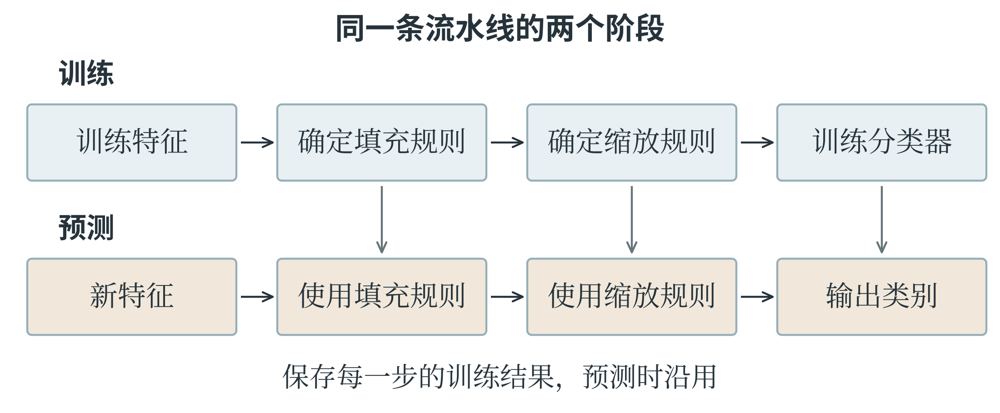

7.4 scikit-learn 与第三方库使用
统一接口与输入形状
scikit-learn 提供许多常见机器学习算法，导入名称为 sklearn。很多模型具有相似接口：创建对象时设定超参数，调用 fit 使用训练数据学习，再调用 predict 对新数据预测。名字相同并不表示内部算法相同，KNN、树和神经网络仍按第六章各自的方法工作。数据处理工具还常提供 transform，表示按已经确定的规则转换数据。例如，缩放器的 fit 计算并保存训练列的均值与标准差，transform 用保存的数值进行标准化。fit_transform 将这两步接在一次调用里，适合在训练数据上使用；验证和测试数据则使用 transform，沿用训练阶段的规则。
监督学习常将特征记为 X，形状为“样本数、特征数”；目标记为 y，对单目标任务通常是一维数组，长度等于样本数。只有一个特征时，X 仍应是二维。例如，三个输入 1、2、3 应写成 [[1], [2], [3]]，而不是只有一维的 [1, 2, 3]。单个新样本也要保留样本轴，所以输入 4 写成 [[4]]。
from sklearn.linear_model import LinearRegression
X_small = np.array([[1.0], [2.0], [3.0]])
y_small = np.array([2.0, 4.0, 6.0])
regressor = LinearRegression()
regressor.fit(X_small, y_small)
print(regressor.coef_)
print(regressor.intercept_)
print(regressor.predict([[4.0]]))
学到的系数约为 2，截距约为零，预测约为 8。浮点计算可能使零显示为非常接近零的小数。以 _ 结尾的 coef_、intercept_ 是拟合后得到的属性，与创建模型时的设置有所区别。这三个点只用于演示接口和拟合，不能用它们自身的零训练误差评价对真实数据的预测能力。
多项式回归可以将特征变换与回归模型串在一起。流水线 Pipeline 按规定顺序连接处理步骤，使训练和预测使用一致的变换。
from sklearn.pipeline import make_pipeline
from sklearn.preprocessing import PolynomialFeatures
polynomial_model = make_pipeline(
PolynomialFeatures(degree=2, include_bias=False),
LinearRegression()
)
polynomial_model.fit(
[[1.0], [2.0], [3.0]], [2.0, 5.0, 10.0]
)
print(polynomial_model.predict([[4.0]]))
二次特征变换把每个输入扩成 \(x\)、\(x^2\)，include_bias=False 不再额外加入全一列，因为后面的回归模型已默认包含截距。三个目标正好来自 \(x^2+1\)，所以对 4 的预测约为 17。这是演示构造曲线的方法，增加次数是否适合真实问题，仍要独立验证。
标准化规则怎样保存下来
下面单独观察缩放器。训练数据只有一个特征，三个值是 10、20、30，均值为 20。按本书采用的总体标准差公式，标准差为 \(\sqrt{200/3}\)，约为 8.165。缩放器把这两个数保存下来，以后遇到新样本，仍然使用它们。
from sklearn.preprocessing import StandardScaler
scaler = StandardScaler()
train_column = np.array([[10.0], [20.0], [30.0]])
scaled_train = scaler.fit_transform(train_column)
scaled_new = scaler.transform([[40.0]])
print(np.round(scaled_train.ravel(), 3))
print(np.round(scaled_new.ravel(), 3))
print(scaler.mean_)
训练结果约为 [-1.225, 0.000, 1.225]，新值 40 变成约 2.449，保存的均值仍为 20。ravel 将数组展开成一维，方便这里打印；它没有参与标准化计算。若反而对仅含 40 的新数据调用 fit_transform，缩放器会重新学习，新均值变成 40，输出也变成 0。这个 0 已经属于另一套坐标，不能与原来标准化后的训练点直接比较距离。
流水线把整条处理过程保存下来，预测时便能按顺序重用。训练时，原数据依次经过填充器、缩放器和模型；预测时，新数据先使用已经保存的填充与缩放规则，最后才进入已经训练的模型。不能因为新数据没有缺失，就跳过缩放；也不能先手动缩放一遍，再交给还会缩放一次的流水线。
完整地划分数据并选择模型
下面使用库内置的鸢尾花数据。它包含 150 个样本、3 个植物类别，每个样本有花萼长度、花萼宽度、花瓣长度和花瓣宽度四个特征，单位为厘米。花萼是花瓣外侧的叶状结构。数据已经提供测量值和类别标签，可以用来练习完整流程，无需在这个示例中另行采集图片。
from sklearn.datasets import load_iris
from sklearn.model_selection import train_test_split
iris = load_iris()
X = iris.data
y = iris.target
(X_train, X_remaining,
y_train, y_remaining) = train_test_split(
X, y, test_size=0.4, random_state=7, stratify=y
)
X_valid, X_test, y_valid, y_test = train_test_split(
X_remaining, y_remaining, test_size=0.5,
random_state=7, stratify=y_remaining
)
print(X_train.shape, X_valid.shape, X_test.shape)
形状分别为 (90, 4)、(30, 4)、(30, 4)。第一次留出 40%，第二次把留出的部分平分，得到训练、验证和测试三组。stratify 按标签分层，使各组类别比例与原数据相近；random_state 固定随机划分过程。这个数据适合演示按样本随机划分，实际任务是否需要按对象或时间分组，仍应遵循第五章的要求。接下来比较两个 KNN 设置和一个浅层决策树。StandardScaler 在训练集上学习各列均值和标准差，并在预测时沿用；SimpleImputer 负责按训练列的均值处理缺失。鸢尾花数据本身没有缺失，这一步展示了怎样将完整处理过程放进流水线。
from sklearn.impute import SimpleImputer
from sklearn.preprocessing import StandardScaler
from sklearn.neighbors import KNeighborsClassifier
from sklearn.tree import DecisionTreeClassifier
from sklearn.metrics import accuracy_score, confusion_matrix
candidates = {
"KNN_3": KNeighborsClassifier(n_neighbors=3),
"KNN_7": KNeighborsClassifier(n_neighbors=7),
"Tree_3": DecisionTreeClassifier(
max_depth=3, random_state=7
)
}
best_model = None
best_score = -1.0
best_name = ""
这时只是准备模型对象，还没有用数据训练。树模型通常不需要标准化来改变按特征阈值划分的结果，这里为比较保持相同处理流程；KNN 的距离则会明显受到尺度影响。
for name, classifier in candidates.items():
model = make_pipeline(
SimpleImputer(strategy="mean"),
StandardScaler(),
classifier
)
model.fit(X_train, y_train)
valid_prediction = model.predict(X_valid)
score = accuracy_score(y_valid, valid_prediction)
print(name, round(score, 3))
if score > best_score:
best_score = score
best_model = model
best_name = name
fit 让填充器、缩放器和模型依次在训练部分学习；predict 则先变换新特征，再调用分类器。选择依据只有验证准确率。相同得分时，上面的严格大于条件保留先遇到的方案，这是一条明确的平分处理规则。评价样本只有 30 个，一个错误就会改变约 3.3 个百分点，所以微小差异需要谨慎解释。
test_prediction = best_model.predict(X_test)
print("Selected:", best_name)
print("Test accuracy:",
round(accuracy_score(y_test, test_prediction), 3))
print(confusion_matrix(y_test, test_prediction,
labels=[0, 1, 2]))
到这一步才使用测试集。混淆矩阵的行对应真实标签，列对应预测标签，顺序由 labels 明确为 0、1、2；这些编号对应的类别名称可查看 iris.target_names。这段示例保留验证后选中的已训练模型作测试，没有再合并训练与验证数据重新训练。另一种流程可以在方案确定后合并开发数据重训，但必须重新拟合完整流水线，并仍将测试集留在外面。
从一条预测追溯整条流程
按上述划分与设置运行，三个候选方案的验证准确率依次约为 0.967、0.933、0.900，因此选中 KNN_3。它在最终 30 个测试样本上判断正确 27 个，准确率为 0.900。混淆矩阵的三行依次为 [10, 0, 0]、[0, 8, 2]、[0, 1, 9]：第 0 类全部正确，第 1 类有两个被判为第 2 类，第 2 类有一个被判为第 1 类。完成模型选择后，保存下来的 best_model 包含三部分：由训练数据决定的填充规则、缩放规则，以及分类器。图 7-5 将训练和预测分开画出。两条路线都使用相同顺序，区别在于训练时需要确定规则和模型，预测时使用已经确定的结果。

假设新测量的四个特征依次为 5.1、3.5、1.4、0.2 厘米，可以按原来的特征顺序构造一行数据，交给最终流水线。代码同时打印类别编号与对应名称，使编号的含义可以检查。
new_measurement = np.array([[5.1, 3.5, 1.4, 0.2]])
new_label = best_model.predict(new_measurement)[0]
print(int(new_label), iris.target_names[new_label])
这个示例的输出为 0 setosa。predict 返回一个预测数组，[0] 取出其中第一个样本的结果。英文名称 setosa 对应鸢尾花数据的第 0 类。输入中四个数的顺序仍是花萼长、花萼宽、花瓣长、花瓣宽；
如果交换其中两列，数组形状仍为一行四列，程序可能照常运行，预测含义却已经改变。来自表格的新记录，应先按训练时采用的字段顺序选择列，再转成模型需要的数组。
还可以将已经产生的错误预测找出来，看看具体是哪些样本。
wrong_positions = np.flatnonzero(y_test != test_prediction)
for position in wrong_positions:
actual_name = iris.target_names[y_test[position]]
predicted_label = test_prediction[position]
predicted_name = iris.target_names[predicted_label]
print(int(position), actual_name, predicted_name)
y_test != test_prediction 对应位置逐项比较，得到布尔数组；flatnonzero 找出其中为真的位置。打印出的编号是测试数组中的位置，并非原始 150 条记录中的固定编号。保留原始样本编号，才能在更大的项目里追溯到相应记录或照片。这一步把一个准确率拆回具体错误，便于描述模型表现。如果要根据错误继续改特征或改模型，就开始了新一轮开发，需要重新安排独立的最终评价材料。
调用其他模型时仍要理解它们
多层感知机也使用相同的训练与预测接口。下面继续使用前面划分的训练集与验证集，演示一个含 8 个隐藏单元的网络；此处只是理解调用方法，不再据此反复查看前面已经使用过的测试集。
from sklearn.neural_network import MLPClassifier
mlp = make_pipeline(
StandardScaler(),
MLPClassifier(hidden_layer_sizes=(8,), solver="lbfgs",
alpha=0.01, max_iter=2000, random_state=7)
)
mlp.fit(X_train, y_train)
mlp_prediction = mlp.predict(X_valid)
print(round(accuracy_score(y_valid, mlp_prediction), 3))
hidden_layer_sizes=(8,) 是只含一个元素的元组，表示一个隐藏层、8 个单元；若写成 (8, 4)，则是两个隐藏层。solver 选择优化方法，这里使用适合小型数据演示的 L-BFGS，它不是前面手写的普通梯度下降；alpha 控制权重正则化，max_iter 设定最大迭代次数。若出现尚未收敛的警告，应查看特征尺度、优化过程和迭代设置，不要只删除提示文字。支持向量机可以从 sklearn.svm 导入 SVC，例如 SVC(kernel="linear", C=1.0) 创建线性核分类器。不同算法需要不同超参数，但传入的数据形状和训练、评价的分工仍相同。
非监督聚类不需要目标标签。下面的输入只有一列特征，fit_predict 将拟合与输出训练样本簇编号合在一次调用中。
from sklearn.cluster import KMeans
cluster_model = KMeans(
n_clusters=2, n_init=10, random_state=7
)
cluster_ids = cluster_model.fit_predict([[1.0], [2.0],
[8.0], [9.0]])
print(cluster_ids)
print(cluster_model.cluster_centers_)
得到的两个中心为 1.5 和 8.5，顺序可能交换，簇编号也随之交换。n_init=10 表示尝试多组初始中心，选择目标值较好的结果。簇编号 0、1 是算法为分组安排的名称，不能直接当作植物类别标签计算分类准确率。若有外部标签用于研究分组与真实类别的关系，需要采用适合聚类的比较方法，而不是把编号当作天然一一对应。
按文档使用陌生工具
遇到陌生函数，可以按输入、参数、返回值和最小示例的顺序阅读文档。函数接受列表还是数组，要求一维还是二维，是否改变原对象，参数默认值是什么，返回的是单个结果还是多个结果，都可能影响程序。读懂这些约定后，可以先修改一个小例子，检查实际结果是否符合预期。例如，jieba 是一个常用中文分词工具。中文词语之间通常没有空格，分词要判断一段连续文字可以怎样切成词。jieba.lcut 返回词语列表，jieba.cut 则返回可以遍历的迭代结果。
import jieba
words = jieba.lcut("我喜欢学习人工智能")
print(words)
分词结果受词典、算法和语境影响。词语切分正确，不等于已经理解整句话的含义；专有名称或有歧义的短语还可能需要补充词典或人工核对。
使用第三方库时，也应注意安装名称与导入名称可能不同，如 scikit-learn 与 sklearn，并记录运行环境中的版本。文档示例中的默认值和接口可能更新，核对当前版本比依靠旧代码的印象更可靠。